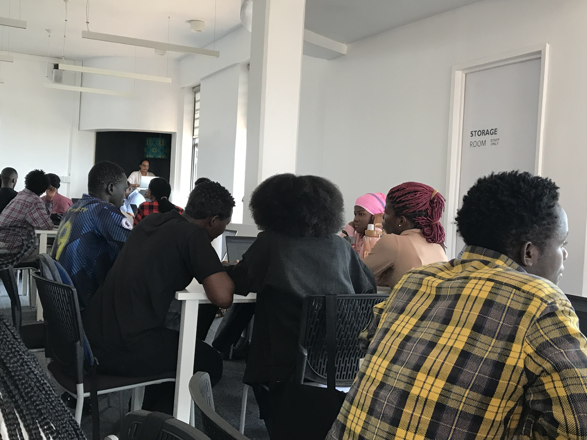

At first I didn't see the need of SDL, but now there's no amount of words to explain how much it has transformed me.
Elysee KwitondaAt first I didn't see the need of SDL, but now there's no amount of words to explain how much it has transformed me.
Elysee KwitondaSDL provided a platform to grow as a person, especially in week five where we had to choose tiny habits that we presented in week 10.
Divine IzihirweThis is a very engaging lesson. It has been so fun in SDL especially the practicals, the negpod discussions, among others
Guenn RuzindanaStudents are grouped into study groups called NegPods where they get together and discuss their academic journey. Each NegPod has their leader and they have to meet with their learning coach once every 2 weeks.
They are facilitated in the classroom but the learning is entirely based on them. They are given a study topic and then discuss in NegPods then later have a debrief with the facilitator.
